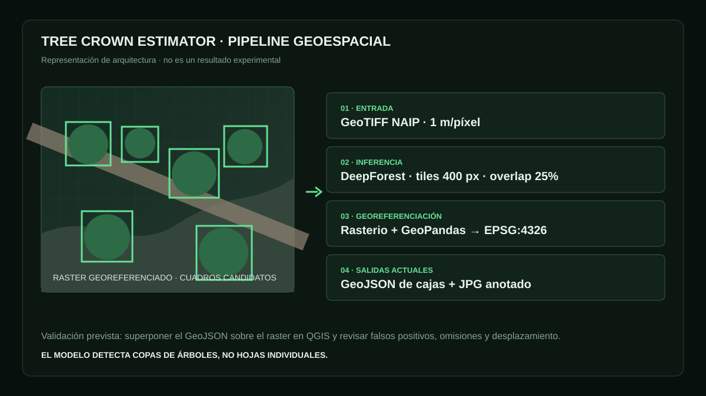

De una imagen satelital a un mapa de copas.
Este proyecto explora cómo combinar visión por computadora y análisis geoespacial para transformar una imagen en datos utilizables. El flujo detecta copas de árboles por teselas, lleva cada resultado desde píxeles hasta coordenadas y produce una capa que puede recorrerse sobre el territorio.

Convertir vegetación visible en datos que se pueden mapear.
El proyecto empezó como una exploración de visión por computadora aplicada a imágenes satelitales: localizar copas de árboles, conservar su posición geográfica y producir una salida que pudiera abrirse directamente en herramientas GIS.
Conservar la geografía después de inferir en píxeles.
Adquirir el raster
El flujo propuesto exporta mosaicos NAIP de 1 metro desde Google Earth Engine para un área definida por código postal de Estados Unidos.
Detectar por teselas
DeepForest procesa parches de 400 píxeles con 25% de solapamiento para reducir pérdidas donde una copa cruza el borde.
Transformar coordenadas
Rasterio convierte xmin, ymin, xmax e ymax desde píxeles al CRS del GeoTIFF. GeoPandas reproyecta el resultado a WGS84.
Exportar e inspeccionar
El prototipo escribe un GeoJSON de cajas y un JPG con detecciones y scores dibujados sobre la imagen.
Una herramienta pequeña con responsabilidades separadas.
DeepForest como punto de partida
El script integra weecology/deepforest-tree para llevar un detector especializado a un flujo geoespacial propio.
Georreferencia preservada
La transformación se lee del archivo de entrada, de modo que cada caja vuelve al espacio geográfico en lugar de quedar atrapada en coordenadas de imagen.
GeoJSON interoperable
Las cajas se guardan como polígonos con score y CRS normalizado, listos para explorar y revisar en QGIS.
Imagen anotada
OpenCV dibuja rectángulos y puntajes de confianza sobre el raster para revisar rápidamente cómo respondió el detector.
Trabajo por bloques
El tileado divide rasters grandes en unidades manejables y abre una ruta directa hacia procesamiento con GPU.
De una detección a un mapa
La salida combina ubicación, geometría y confianza para que cada objeto pueda filtrarse, visualizarse y conectarse con otros datos territoriales.
De la detección a nuevas preguntas sobre el territorio.
Una vez georreferenciadas, las copas pueden cruzarse con barrios, parcelas, calles u otras capas urbanas. El proyecto convierte una imagen difícil de analizar a escala en objetos que se pueden contar, filtrar, comparar y revisar.
Localizar y contar
Las detecciones ofrecen un punto de partida para recorrer grandes áreas y organizar una revisión de arbolado visible.
Leer diferencias espaciales
La misma estructura permite comparar densidad entre zonas o seguir cambios cuando existen imágenes de distintas fechas.
Dirigir la inspección
Los puntajes y la ubicación ayudan a ordenar dónde revisar primero y a llevar observaciones del mapa nuevamente al dataset.
Una base para experimentar con visión y territorio.
- Escalar a nuevas geografías: el flujo puede conectarse con otras fuentes de imágenes que ofrezcan resolución y licencias compatibles.
- Medir desempeño: un conjunto etiquetado permitiría comparar configuraciones con precisión, recall e IoU por tipo de escena.
- Refinar geometrías: la detección rectangular puede evolucionar hacia segmentación para estimar forma y cobertura de cada copa.
- Acelerar áreas extensas: GPU, reanudación y colas de teselas abren el camino a procesamientos más grandes.
- Ampliar salidas: GeoJSON, imagen anotada y futuros formatos tabulares pueden integrarse con dashboards, mapas y flujos de análisis.